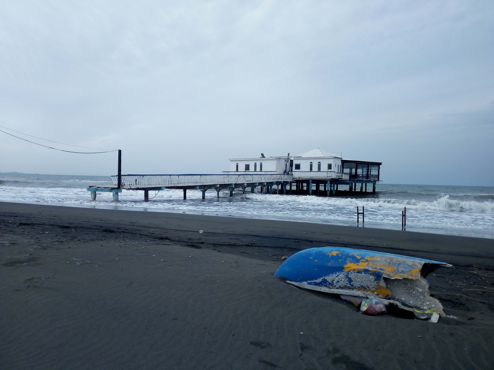

ALBANIA · LEZHË

Shëngkoll Camping Area
Shëngkoll Camping Area is a peaceful place to enjoy Albania’s natural beauty and outdoor life. Located in the Lezhë region, it offers a relaxing atmosphere for travelers looking to spend time in nature and experience a quieter side of Albania. Surrounded by the region’s scenic landscapes, it is a lovely stop for those exploring the country beyond its main tourist destinations.
My Photo Gallery
Explore my personal travel photos of Shëngkoll Camping Area.
View All Photos ↗